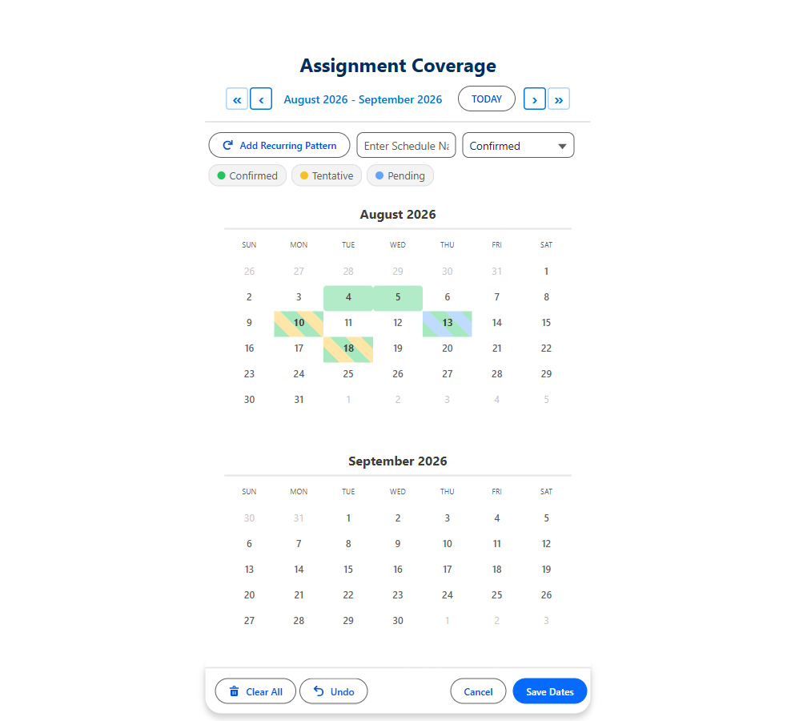

The Salesforce Calendar Built for Staffing and Recruiting Agencies
Recruiters live in dates. Which days can the candidate work? Which interview slots are open? Who is covering the assignment on the 14th? Standard Salesforce gives you one date field, or a single start and end. MultiDatePick captures the rest, straight into your own objects, with no code.
Every staffing agency runs on the same four scheduling problems, and standard Salesforce solves none of them cleanly. Recruiters end up in spreadsheets, email threads, and notes fields, and the data never makes it back into the CRM where reporting can reach it.
Four problems, one component suite
Candidate availability
Let a candidate or recruiter click every day the candidate can work, including scattered non-contiguous days, and save one record per date against the contact.
Interview scheduling
Pick dates and time slots together, with conflict detection so the same interviewer never gets booked twice. See the interview workflow.
Assignment coverage
Book a multi-day or multi-week placement as a single record with a start and end date, or as one record per shift, whichever your reporting needs.
Credential and compliance dates
Capture license, certification, and background-check expiry dates on a calendar instead of a stack of single date fields.

What recruiters do today, and what changes
| Recruiting task | Standard Salesforce today | With MultiDatePick |
|---|---|---|
| Candidate gives 9 available days this month | Typed into a notes field, or 9 records created by hand | 9 clicks on one calendar, 9 records saved in one action |
| Candidate works every other Tuesday | Recruiter works out the dates on a paper calendar | Recurring pattern: every 2 weeks, Tuesday, across a date range |
| Assignment runs Monday to Friday for six weeks | One start date and one end date, no visibility of the days inside | Consolidated into start and end records, or expanded per day, your choice |
| Three interviewers, overlapping calendars | Email ping-pong, double bookings discovered later | Resource picker with live availability and conflict detection on save |
| Facility needs 4 nurses on the same shift | No concept of capacity, so overbooking is invisible | Capacity mode with X/Y badges, slot closes when it fills |
Capacity, for the shifts that need more than one person
Healthcare, warehousing, events, and hospitality all share a pattern standard Salesforce cannot express: a slot that needs several people, not one. Capacity mode counts existing bookings against a capacity field on the resource record and shows a live X/Y badge on every slot. When the slot fills, it closes. Recruiters stop discovering the overbooking a week later.

Wherever recruiters already work: pages and flows
MultiDatePick is a Lightning Web Component suite, so the calendar goes wherever recruiters already work: the candidate record page, a submittal record, an app or home page, or an Experience Cloud site where candidates enter their own availability. Drop it on a Lightning page in App Builder and it saves records on the spot.
It is also a native Screen Flow component. Most recruiting work already runs through flows (candidate intake, submittal, assignment confirmation), and when the calendar sits inside one, its outputs feed the rest of that flow:
selectedDatesgives you a text collection of every date chosenselectedDatesWithTimesJsoncarries per-date start and end timesbookingConflictDatesandbookingSuccessCounttell the flow what actually saved- The
MultiDatePickParserinvocable action turns the JSON back into loopable records
That means no middle step. The recruiter picks the dates, the flow creates the availability records, sends the submittal, and updates the assignment, all in one screen sequence.

Built for how agencies actually work
- Candidate availability capture
- Interview and panel scheduling
- Multi-day assignment coverage
- Shift and rotation scheduling
- Per-diem and locum day booking
- Credential and license expiry tracking
- Onboarding and orientation dates
- Client site visit scheduling
- Blackout and unavailable dates
- Training and compliance sessions
The configuration, in full
Nothing here is code. These are properties you set in Lightning App Builder, or inputs you set on the component inside a Screen Flow. Point them at your own objects; the names below are only an example schema.
| relatedObjectApiName | Assignment__c — the record each booking creates |
| relationshipFieldApiName | Provider__c — the lookup back to the page's record |
| dateFieldApiName | Assignment_Date__c |
| recordNameField | Assignment_Name__c |
| resourceObjectApiName | Job__c — the resource is the job, not a room or a person |
| resourceNameField | Name |
| bookingResourceField | Job__c — the lookup on the assignment |
| capacityField | Openings_Per_Day__c on the job, so a shift needing four people stays open until it has four |
| businessHoursStartField businessHoursEndField | Shift_Start__c / Shift_End__c on the job, so nights and days differ per role |
| statusField | Status__c |
| statusColors | Submitted:#60a5fa;Confirmed:#22C55E;Credentialing:#fbbf24;Worked:#a855f7;Cancelled:#a1a8b5 |
| secondStatusField | Shift_Type__c — day, night or call, shown alongside status |
| enableEditMode | true — recruiters reassign and cancel inline |
| twoMonthView | true — assignments cross month boundaries constantly |
| preloadExistingDates | true, with preloadMode = editable |
recordId pointing at the provider. Set every Boolean explicitly with $GlobalConstant.True or $GlobalConstant.False: a blank Boolean in Flow is null, not false, and the component cannot tell the difference.| relatedObjectApiName | Availability__c |
| relationshipFieldApiName | Provider__c |
| dateFieldApiName | Available_Date__c |
| showRecurringPattern | true — "every other Tuesday" without a paper calendar |
| endDateField | set it to consolidate consecutive days into one record with a start and end; leave it blank for one record per day |
| statusField | Status__c, so tentative and confirmed availability read differently |
endDateField is the single most consequential property here. It decides whether six weeks of Monday-to-Friday availability is 30 records or 6, and changing it later means migrating data, not just editing a page.Once a configuration works, save it from the Setup Wizard and it becomes a Config__mdt record. Every other placement then needs one property: configName. See how the wizard builds it.
The view that matters here is Timeline
Recruiting and staffing are a who problem before they are a when problem. A month grid answers "what is happening on the 14th", which is rarely the question on a staffing desk. Switch the same component to Timeline and you get recruiters or candidates down the side and two weeks of dates across the top, so an over-committed week is visible at a glance instead of requiring you to open days one at a time.
resourceObjectApiName accepts any object, so setting it to User turns Timeline into a staff roster, Week into a shift grid, and Utilization into a team capacity dashboard, with no code change. Map businessHoursStartField to a field on User and each person's own working hours bound the week grid. Two configs in the library do exactly this: Staff Shift Roster and Team Capacity Planning.
Utilization is the one to hand a manager: percentage of capacity used per person per day, green through red, with over-capacity called out. It is read only, so it belongs in availableViews alongside a writable default rather than as the default itself.
One calendar, every recruiting date
Coming to the Salesforce AppExchange in 2026. Tell us where to send the launch note.
100% Salesforce native. Your data and your configuration never leave your org.